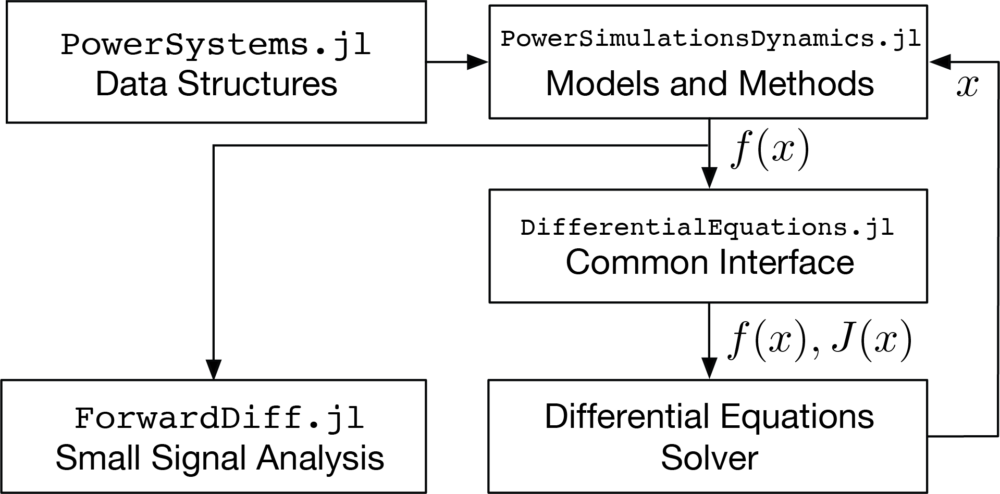

PowerSimulationsDynamics.jl
PowerSimulationsDynamics.jl is a Julia package for doing Power Systems Dynamic Modeling with Low Inertia Energy Sources.
Installation
You can install it by typing
pkg> add PowerSimulationsDynamicsUsage
Once installed, the PowerSimulationsDynamics package can by used by typing:
using PowerSimulationsDynamicsStructure
The following figure shows the interactions between PowerSimulationsDynamics.jl, PowerSystems.jl, DifferentialEquations.jl and the integrators. The architecture of PowerSimulationsDynamics.jl is such that the power system models are all self-contained and return the model function evaluations. The Jacobian is calculated through DifferentialEquations.jl's common-interface enabling the use of any solver available in Julia. Considering that the resulting models are differential-algebraic equations (DAE), the implementation focuses on the use of implicit solvers, in particular SUNDIALS since it has exceptional features applicable to large models — for instance, interfacing with distributed linear-solvers and GPU arrays. In addition, automatic differentiation is implemented using ForwardDiff.jl to obtain jacobians to perform small signal analysis.

⠀
Contents
- Tutorial 0: Data creation
- Tutorial: One Machine against Infinite Bus (OMIB)
- Step 1: Package Initialization
- Step 2: Load the system
- Step 3: Build the simulation and initializing the problem
- Step 4: Run the Simulation
- Step 5: Exploring the solution
- Optional: Small Signal Analysis
- Tutorial: Dynamic Lines
- Step 1: Package Initialization
- Step 2: Data creation
- Step 3: Create the fault and simulation on the Static Lines system
- Step 4: Run the simulation of the Static Lines System
- Step 5: Store the solution
- Step 3.1: Create the fault and simulation on the Dynamic Lines system
- Step 4.1: Run the simulation of the Dynamic Lines System
- Step 5.1: Store the solution
- Step 6.1: Compare the solutions:
- Network model
- Reference Frames
- Generator Models
- Machines
- Shafts
- Automatic Voltage Regulators (AVR)
- Power System Stabilizers (PSS)
- Prime Movers and Turbine Governors (TG)
- Reference
- Inverter Models
- Small Signal Analysis